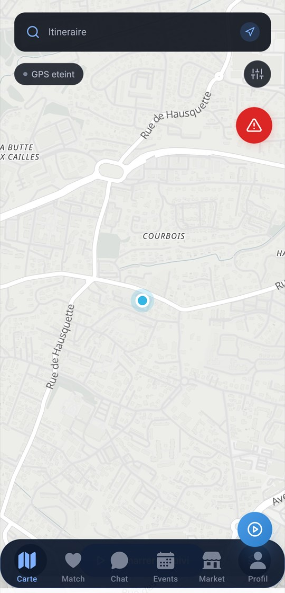
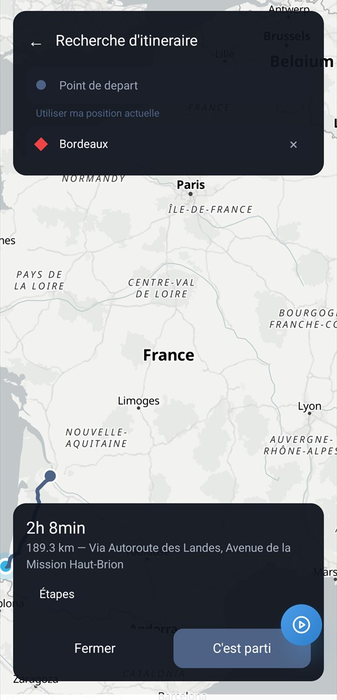
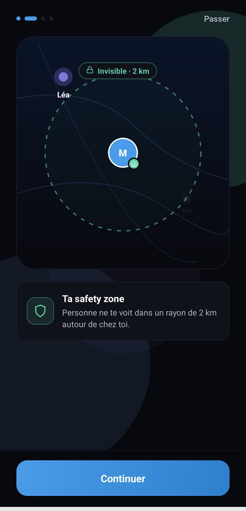
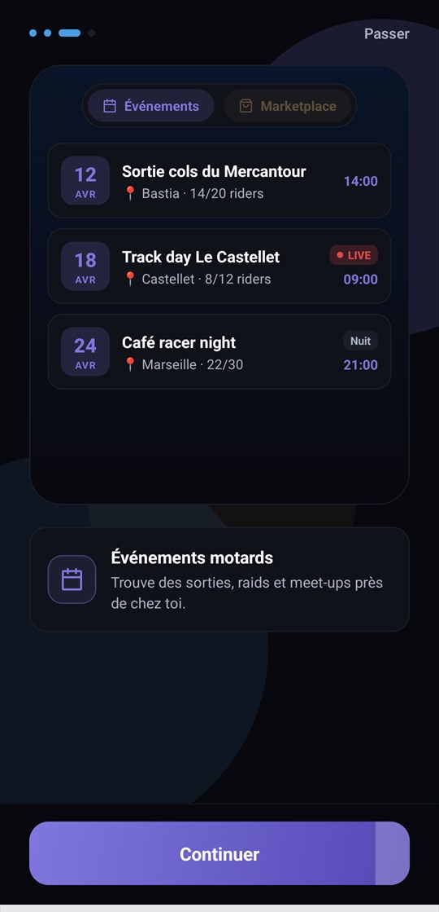
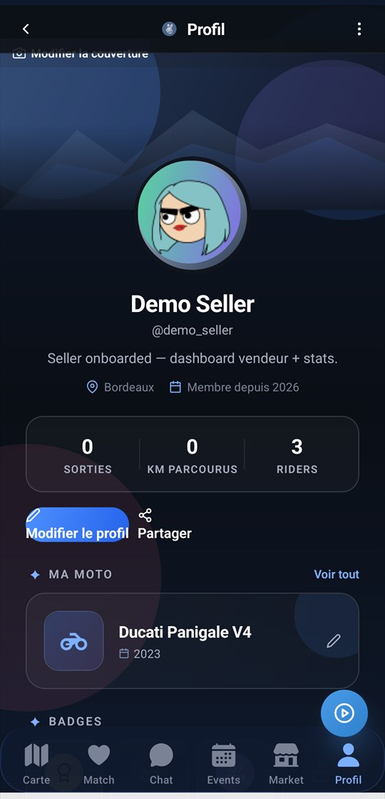
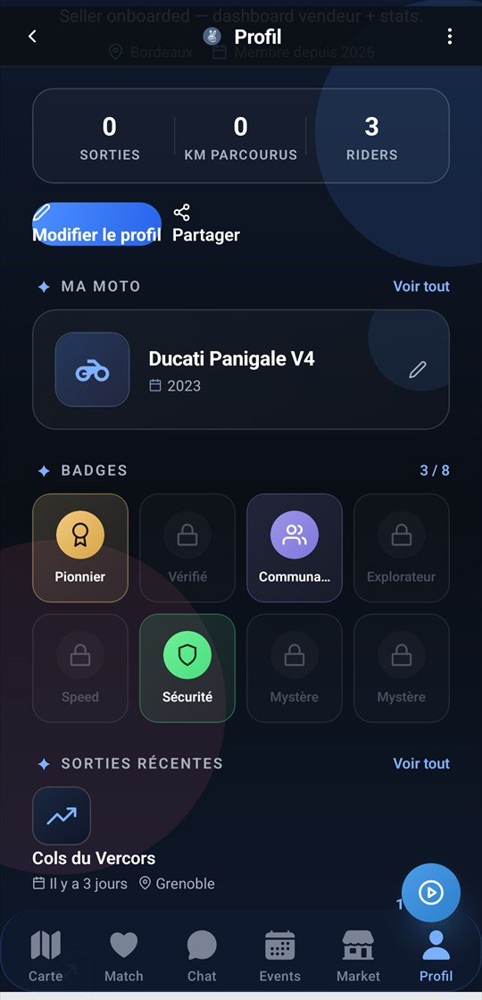
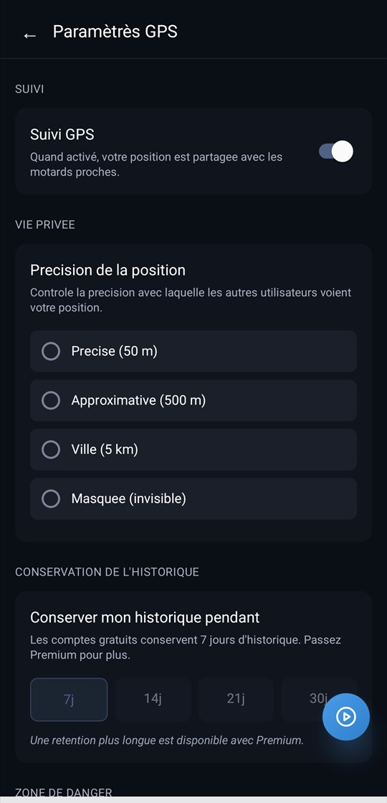
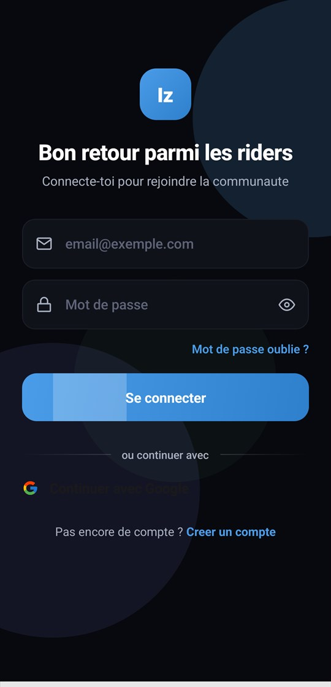
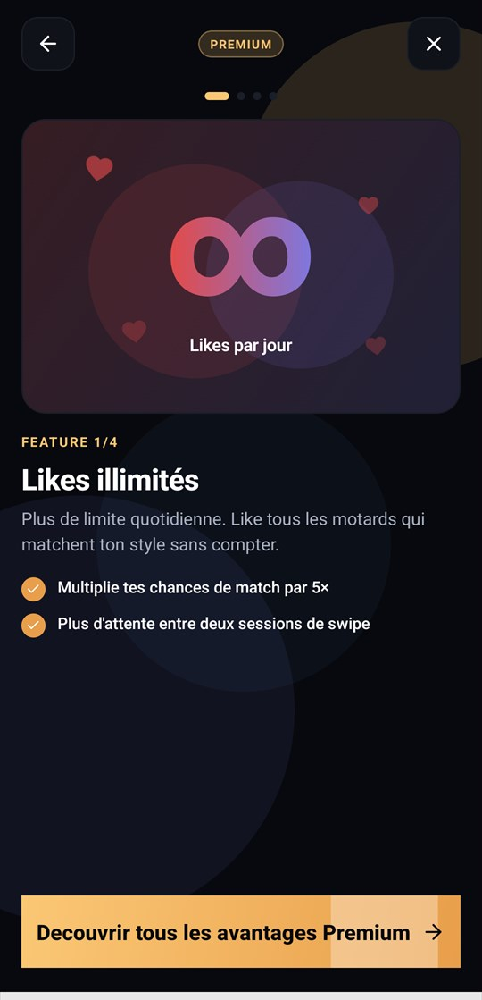

La culture, d'abord
Le croisement n'est pas un gimmick. C'est un signe de reconnaissance. On ne réinvente pas la culture motard : on l'amplifie.
IzenRide · Immersion
Cette page se pilote au scroll. Casque conseillé.
Initialisation du cockpit…
Bêta — inscriptions ouvertes
IzenRide n'est pas une app de plus. C'est le cockpit du motard : une navigation pensée pour vos gants, les dangers de la route annoncés avant que vous les voyiez, et un filet de sécurité qui veille quand la route tourne mal.
Manifeste
Une industrie entière nous voit comme des cas particuliers de l'automobile. Nous avons construit l'inverse : un outil qui part de la posture, des gants, de la vitesse — et du danger.
Le croisement n'est pas un gimmick. C'est un signe de reconnaissance. On ne réinvente pas la culture motard : on l'amplifie.
Une plaque mouillée invisible, un freinage tardif, un radar planqué. L'information utile circule en temps réel, anonymisée.
Pas de pub. Pas de monétisation de votre trajectoire. Ce que vous voyez vient des motards, et reste aux motards.
Signature
Deux mains qui se lèvent à 90 km/h. Un dixième de seconde. « Je te vois, on est du même côté. »
IzenRide détecte les trajectoires qui se croisent et transforme le rituel en mémoire : qui, où, quand. Sans rien forcer, sans écran à regarder. Vos rencontres se comptent toutes seules.
Temps réel
Pas de base achetée. Pas de pub. Les dangers de votre trajet, annoncés avant que vous les voyiez.
Contrôle, gravier, épingle serrée, chaussée glissante : l'app les annonce à l'approche, avec une alerte graduée selon la distance. La remontée par les riders eux-mêmes arrive avec la bêta ouverte.
Filet de sécurité
Le mode qu'on active en espérant ne jamais en avoir besoin.
Position partagée en éphémère avec vos proches, SOS déclenché d'un appui, décompte de dix secondes pour annuler une fausse alerte, et vos coordonnées exactes transmises avec elle. Ça s'arrête quand vous coupez le contact.
Écrans officiels
Des écrans de la bêta, capturés sur émulateur à partir du build en cours. Bougez la souris — ou inclinez le vôtre.









CarteLes dangers annoncés et les motards de votre secteur.
Chiffres de la bêta fermée — mis à jour à chaque vague d'invitations.
Bêta fermée
Les invitations partent par région, par paquets. Laissez votre adresse : vous saurez avant tout le monde quand votre secteur ouvre.